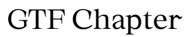

Feel free to use this file in any way you want, you can edit a copy of this file as much as you want for non-commercial or commercial purposes. It's not necessary, but if you want, you can ping me at @mikamatikainen on Twitter when using this file. Would be just nice to see how this evolves :-) Images: Copyright © Unsplash or Mika Matikainen.
How this file can be used
A note about typefaces
This file is using platform-native typefaces for iOS & macOS, designed by Apple.
To make texts editable, you can download the typefaces at https://developer.apple.com/fonts/
Fonts used on the live site
Just for reference or if you’re interested, I list here the typefaces I’m using on the live site at https://www.nordicrose.net. If you’d like to use them in your own project, I added links for you as well to make it easier to purchase the required license.
-

- logo as vector outline
- by Good Type Foundry (https://www.goodtypefoundry.com/chapter) -
- large headlines
- by Rene Gieder (https://www.myfonts.com/fonts/rene-bieder/mackay/) -

- body copy
- by Okay Type (https://okaytype.com/harrietseries) -

- UI elements, some subtitles and some body copy
- by Colophon Foundry (https://www.colophon-foundry.org/typefaces/basis-grotesque/) -

- some playful elements at some point, maybe
- by Zeh Fernando, available for free at Dafont (https://www.dafont.com/nokia-cellphone.font)